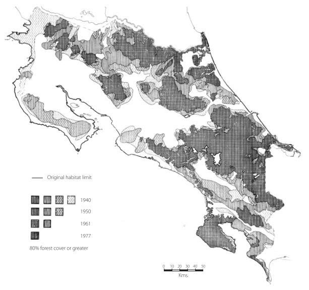

Son carnívoros y se alimentan de mamíferos pequeños, aves y culebras. Entre ellos las ratas de monte (Proechimys semispinosus), el zorro pelón (Didelphis marsupialis), el zorricí (Marmosa sp.), el murciélago (Lonchophylla sp.), el ratón de monte (Heteromys
desmarestianus), la guatuza (Dasyprocta punctata), el ratón de monte (Tylomys watsoni), el ratón de monte (Zygodontomys brevicauda), la martilla (Potos flavus, la iguana (Iguana iguana), la pava granadera (Penelope purpurecens), insectos.
Comportamiento
Son principalmente nocturnos y crepusculares. Son solitarios y terrrestres, sin embargo, presentan gran facilidad para subir a los árboles.
Hábitat y distribución
Hábitat
Viven en bosques húmedos, bosques secos, bosques de galería, bosques secundarios viejos y en ocasiones se presentan en áreas agrícolas.
Distribución

fig. 2 Distribución en Costa Rica Leopardus pardalis(manigordo).
Hábitats disponibles en todo el país, desde el nivel del mar hasta los 3.800rn.
Distribución fuera de Costa Rica
Desde el sur de E.E.U.U. hasta el norte de Argentina. Se localiza desde las tierras bajas hasta los 3.800 m.s.n.m.
Localidad del tipo
Limitado a México por Thomas (1911), luego limitado por Allen (1919) a Veracruz.
Demografía y conservación
Estado de amenaza
Esta especie está considerada como en peligro de extinción, debido principalmente a la cacería indiscriminada y a la pérdida de su habitat por la deforestación. Está protegida y regulada por la Ley de Conservación de la Vida Silvestre No. 7317, la Ley Orgánica del
Ambiente No. 7554 y el decreto No. 26435-MINAE. Asimismo está incluída en el Apéndice I del Convenio sobre el Comercio Internacional de Especies Amenazadas de Fauna y Flora Silvestre (CITES).
Biología poblacional
Su densidad de población es de O. 14-0.25/km2 de bosque primario.
Descripción
Descripción científica
Longitud de la cabeza y cuerpo 640-838mm, longitud de la cola 260—419mm, peso 7-14.5kg. Es el más grande de los pequeños felinos manchados. La cola es angosta y sin pelaje espeso; es más corta que las patas traseras. La parte dorsal es café arenoso hasta amarillo
pálido, con un patrón de rosetas negras o grandes óvalos con la parte central de color café leonado. La parte ventral tiene manchas negras y blancas. El pelaje es además corto y liso, está invertido sobre la nuca, inclinado hacia la cabeza. Los ojos son medianos,
amarillentos. Ante el reflejo de la luz, los ojos son de color amarillo brillante. Las patas son largas y las delanteras son más anchas que las traseras.